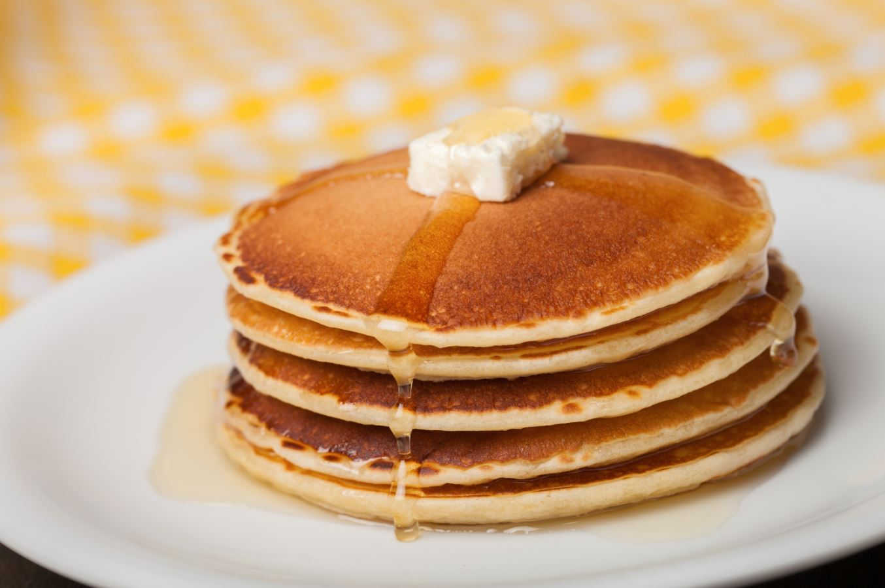

Pancakes
Prep : 15 min | Cook : 20 min
--------------------------------------------------------
Ingredient List:
1 1/2 Cups All Purpose Flour
3 1/2 tsp Baking Powder
1/4 tsp salt
1 TB Brown Sugar
1 1/4 Cups Milk
1 Egg
1 TB Butter (melted)
Instructions:
1.) Mix together flour, baking powder, salt, and sugar.
2.) Make a well in center and pour in milk, eggs, and butter. Mix until smooth
3.) On medium high heat, cook batter until brown on both sides.